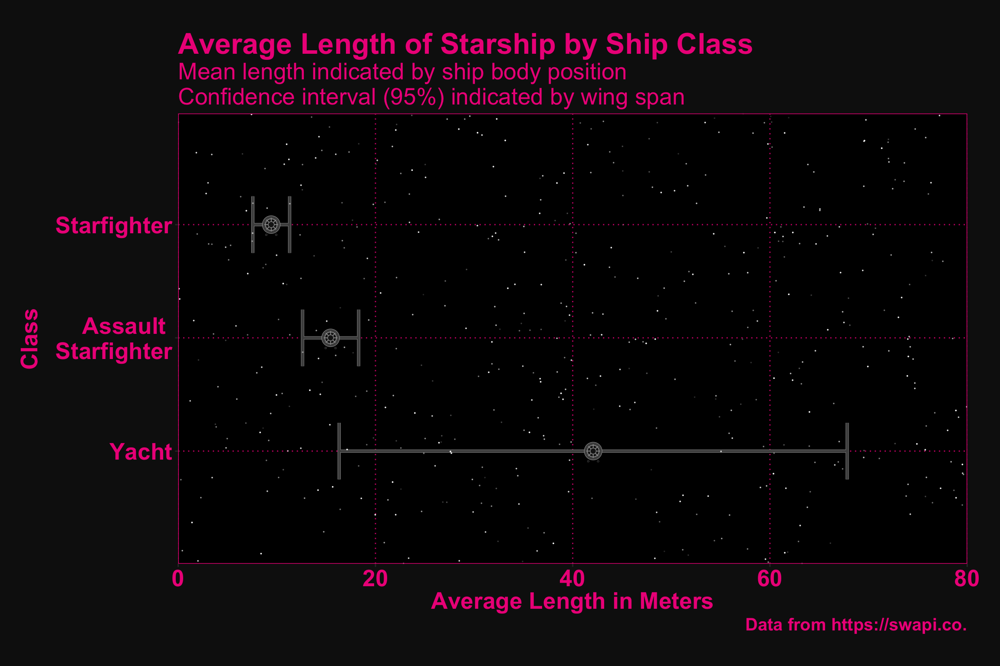

3 The Starships
3.1 The Data
# load and format data
starships <- data.frame(t(list.cbind(sw_starships))) %>%
# convert the star ways starship dataset to a tibble
as_tibble() %>%
# clean column names
janitor::clean_names() %>%
# select only those columns between name and starship (inclusive)
select(name:starship_class) %>%
# mutate columns that are lists to non-lists
mutate_if(is.list, ~(unlist(.))) %>%
# mutate all columns, replacing "unknown" with "NA"
mutate_all(~(na_if(., "unknown"))) %>%
# convert numeric columns to numerics
mutate_at(vars(cost_in_credits,
length,
crew,
passengers,
cargo_capacity,
hyperdrive_rating,
mglt), ~(as.numeric(.))) %>%
# extract the max_atmosphering_speed and convert starship_class to a lowercase
# factor
mutate(max_atmosphering_speed = parse_number(max_atmosphering_speed),
starship_class = as.factor(tolower(starship_class))) %>%
# seperate consumables into a value and unit (e.g., days, weeks, months,
# years)
separate(consumables, c("con_n", "con_unit"), sep = " ") %>%
# convert units to numeric values and multiply with the consumable value to
# provide the amount of consumable in the total number of days
mutate(con_unit = case_when(con_unit == "day" ~ "1",
con_unit == "week" ~ "7",
con_unit == "month" ~ "30",
con_unit == "years" ~ "365"),
consumables = as.numeric(con_n) * as.numeric(con_unit)) %>%
# retain only the new consumables column (i.e., drop con_n and con_unit)
select(-starts_with("con_"))
# look at first ten rows of tidied dataet
head(starships, n = 10L) ## # A tibble: 10 x 13
## name model manufacturer cost_in_credits length max_atmospherin… crew
## <chr> <chr> <chr> <dbl> <dbl> <dbl> <dbl>
## 1 Sent… Sent… Sienar Flee… 240000 3.80e1 1000 5
## 2 Deat… DS-1… Imperial De… 1000000000000 1.20e5 NA 342953
## 3 Mill… YT-1… Corellian E… 100000 3.44e1 1050 4
## 4 Y-wi… BTL … Koensayr Ma… 134999 1.40e1 1000 2
## 5 X-wi… T-65… Incom Corpo… 149999 1.25e1 1050 1
## 6 TIE … Twin… Sienar Flee… NA 9.20e0 1200 1
## 7 Exec… Exec… Kuat Drive … 1143350000 NA NA 279144
## 8 Slav… Fire… Kuat System… NA 2.15e1 1000 1
## 9 Impe… Lamb… Sienar Flee… 240000 2.00e1 850 6
## 10 EF76… EF76… Kuat Drive … 8500000 3.00e2 800 854
## # … with 6 more variables: passengers <dbl>, cargo_capacity <dbl>,
## # hyperdrive_rating <dbl>, mglt <dbl>, starship_class <fct>,
## # consumables <dbl>3.2 The Visualization
# generate random x, y, and transparency data to use for plotting stars
stars_data <- tibble(x = sample(seq(from = 0, to = 4, by = .0001), 500),
y = sample(seq(from = 0, to = 80, by = .0001), 500),
trans = sample(seq(from = .1, to = .9, by = .0001), 500))
# starships plot
starships %>%
# group by starship_class
group_by(starship_class) %>%
# drop rows that have an NA for length
filter(!is.na(length)) %>%
# calculate mean length and standard deviation, as well as number of ships in
# that class
summarize(len_m = mean(length),
len_sd = sd(length),
len_n = n()) %>%
# retain classes that have more than one ship
filter(len_n > 1) %>%
# convert starship_class to title case and wrap multi-word levels
mutate(starship_class = str_to_title(starship_class),
starship_class = gsub(" ", " \n", starship_class)) %>%
# calculate standard error
mutate(len_se = len_sd / sqrt(len_n)) %>%
# plot starship class v starship length
ggplot(aes(x = fct_reorder(starship_class, desc(len_m)), y = len_m)) +
# add error bars
geom_errorbar(aes(ymin = len_m - (len_se * qnorm(.975)),
ymax = len_m + (len_se * qnorm(.975))),
width = .5, colour = "grey70", lwd = 1.25) +
geom_errorbar(aes(ymin = len_m - (len_se * qnorm(.975)),
ymax = len_m + (len_se * qnorm(.975))),
width = .5, colour = "grey30", lwd = 1) +
# add stars
geom_point(data = stars_data, aes(x = x, y = y, alpha = trans),
colour = "white",
size = .001) +
# plot ship body points
geom_point(size = 6.70, colour = "grey70") +
geom_point(size = 6.40, colour = "grey30") +
geom_point(size = 4.40, colour = "grey10") +
geom_point(size = 3.40, colour = "grey60", shape = 8) +
geom_point(size = 4.40, colour = "grey60", shape = 1) +
geom_point(size = 2.00, colour = "grey60") +
geom_point(size = 1.50, colour = "grey10") +
geom_point(size = 0.20, colour = "grey60",
position = position_nudge(x = -0.09, y = -0.5)) +
geom_point(size = 0.20, colour = "grey60",
position = position_nudge(x = -0.09, y = 0.5)) +
geom_point(size = 0.10, colour = "grey10",
position = position_nudge(x = -0.09, y = -0.5)) +
geom_point(size = 0.10, colour = "grey10",
position = position_nudge(x = -0.09, y = 0.5)) +
# flip the coordinates
coord_flip() +
# add labels
labs(title = "Average Length of Starship by Ship Class",
subtitle = "Mean length indicated by ship body position\nConfidence interval (95%) indicated by wing span",
y = "Average Length in Meters",
x = "Class",
caption = "Data from https://swapi.co.") +
# set y-axis limits and do not show value beyond limits of y-axis
scale_y_continuous(limits = c(0,80),
expand = expand_scale(mult = c(0, 0))) +
# customize using my theme
my_theme() +
theme(plot.margin = unit(c(1, 1, 1, 1), "cm"),
axis.title.y = element_text(vjust = 5))
3.2.0.1 Idea
Points and standard error bars have always looked like Tie Fighters to me, so I decided I would try to plot the length of a starship against the starship class. As would be expected yachts are the largest ships with assult starfighters being slightly larger than basic starfighters. Although I am quite happy with the plot, I believe the fonts and text elements could be greatly improved. Representing all ships as Tie Fighters also may be misleading.
3.2.0.2 Intended Audience
Again, the intended audience for this visualization are people who like Star Wars. To appreciate the error bars some knowledge of statistics would likely be needed, as well.
3.2.0.3 Intended Message
That starship lengths differ by class and that the length of a yacht starship is far more variable than other starship classes.